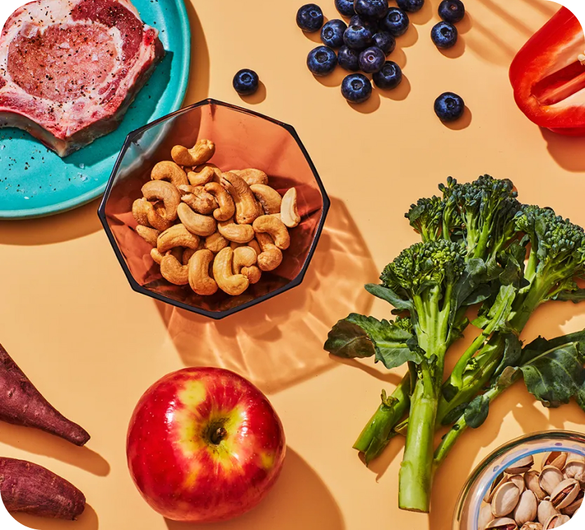

- Красное/Зеленое яблоко2 шт
- Ягоды4 ст.л.
- Кешью2 горсти
- Сыр пармезан50 г.
- Лимонный сок1/2 лимона
- Листья салатапо вкусу
Состав ингредиентов:
Инструкция приготовления:
- Разрежьте каждое яблоко на 4 части, удалите сердцевину, нарежьте яблоки тонкими пластинами и смажьте их лимонным соком при помощи кулинарной кисточки, чтобы они не покоричневели.
- Орехи поджарьте на сковороде до легкой румяности.
- Выложите нарезанные листья салата на сервировочные тарелки, сверху живописно разбросайте яблоки, вяленую клюкву и орехи.
- Смешайте все ингредиенты для заправки (обязательно попробуйте ее и при необходимости отрегулируйте вкус). Полейте заправкой салат (добавляйте понемногу, чтобы не переборщить).
- При помощи овощечистки нарежьте твердым сыр тонкими полосками и выложите поверх салата.

Вариант сервировки